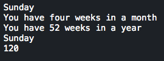

Taniya Prabhakar


Thoughts & Opinions
Classes vs. Modules
similarities and differences, please?!
03/14/2015
Classes and Modules can be confusing and seem overlapping when you first dive into Object-Oriented Programming. However, they each have their own special use cases and implementations that allow for more easily maintainable code, and aren't all that similar. Understood broadly, Classes are all about their objects, whereas Modules are obsessed with their functions.
Think of the Math library and its different types of functions you have access to when including that into your program. You can take calculate means and sines and use those functions anywhere, on any object, without regard to which Class it comes from - which sounds societally correct. This is exactly how a Module works. You define multiple methods and can call them on objects of different classes. All objects should have access to fundamental methods, it's only ethical.
Modules give Class objects more flexibility by giving them the power to easily call multiple functions without having to define them within their own classes. Instead of defining similar functions for distinct Classes, you can store them all in a Module and store them like a library. Classes, on the other hand, define methods and variables that are accessible to its object, once created. Each object represents the definitions in a Class and can call on methods from a Module to use on its contents.
Here's a representation of how Modules and Classes are written:
The Week defined up top is a Module that holds the methods weeks_in_month and weeks_in_year, which both return exactly what you're expecting! Decade is a Class that uses these methods in its no_of_months method which is called on its object, d1, on the last line. Notice the include Week on the first line within Decade. This gives the class access to all the methods defined above in Week.
This outputs:
